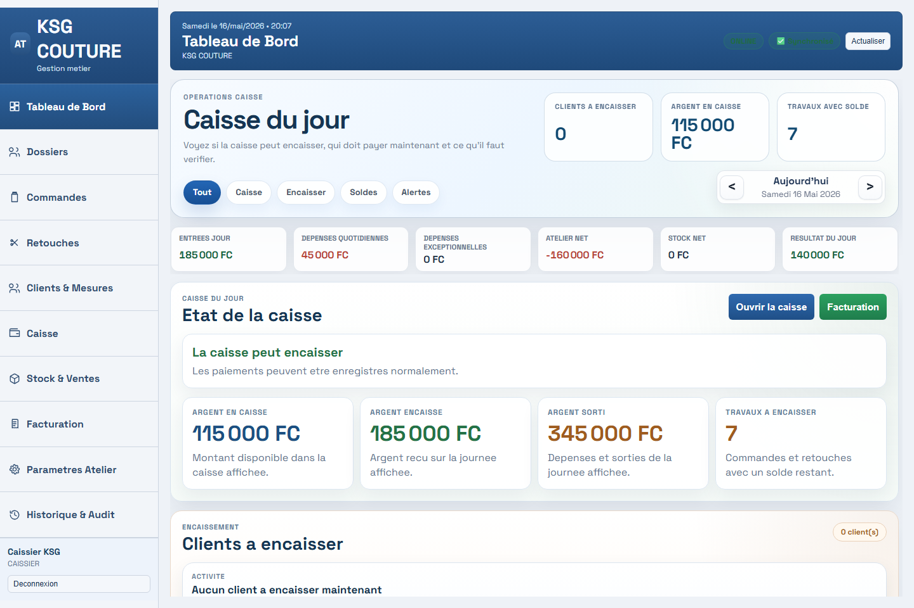
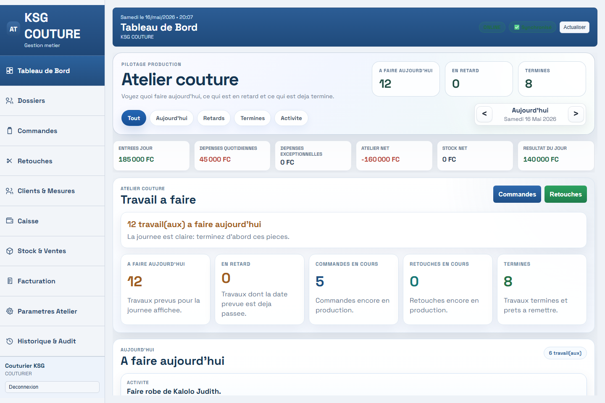
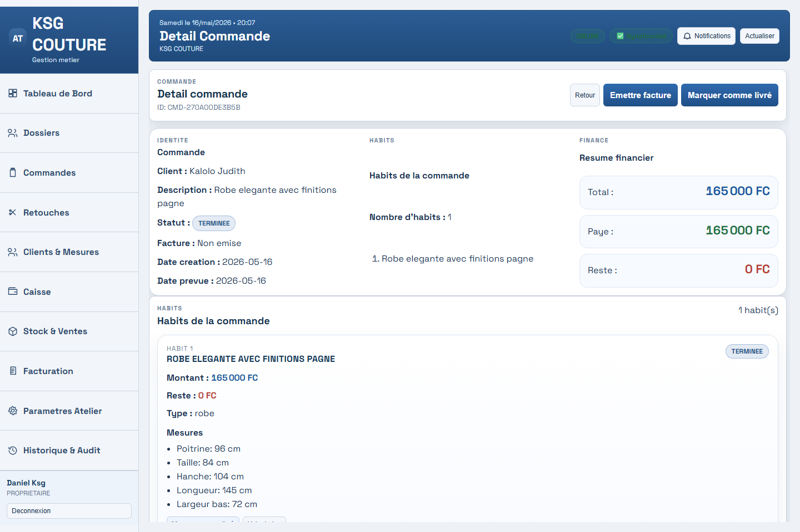
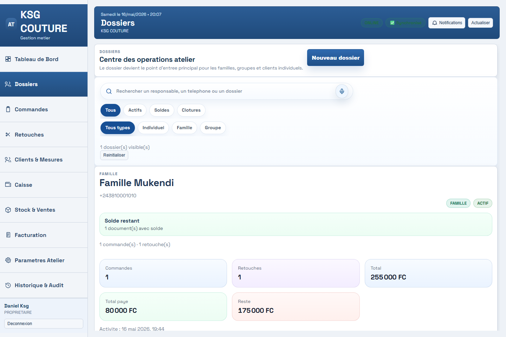
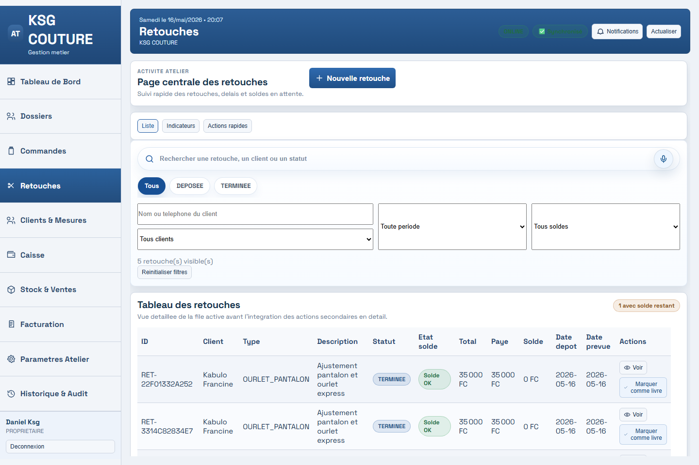
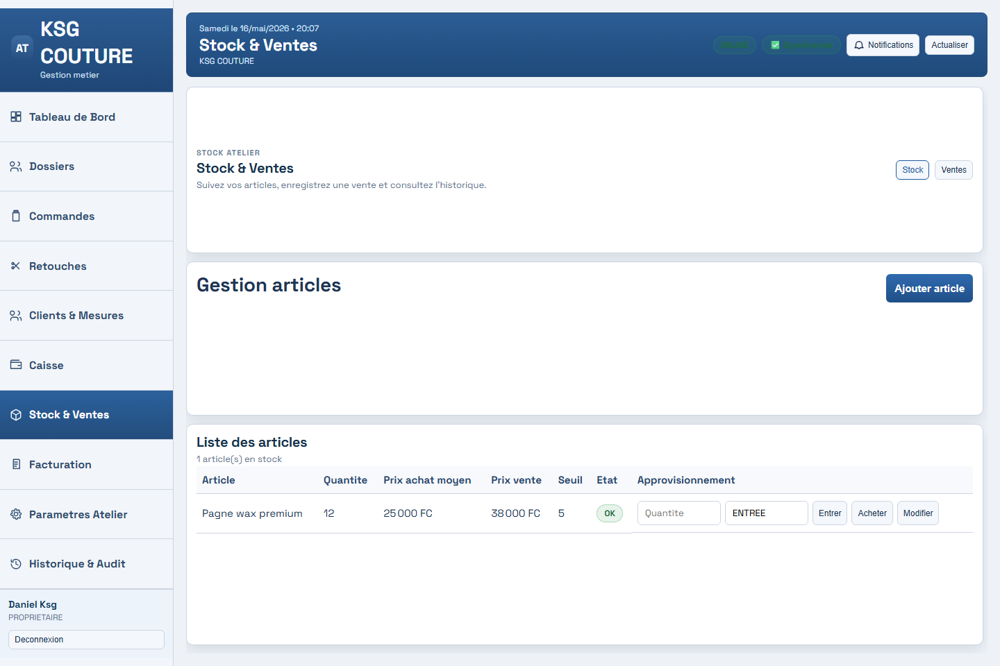

Produit phare VolcanoTech
Atelier Pro, le système complet pour piloter un atelier de couture.
Suivez les commandes, retouches, clients, caisse, stock et rôles de votre équipe dans une interface moderne conçue pour les réalités locales.
Propriétaire
Caissier
Couturier
Offline-first
Fonctionnalités
Un outil pensé pour les tâches réelles de l'atelier.
Atelier Pro aide à garder une vue claire sur les commandes, les retouches, les dossiers clients, la caisse, le stock et les ventes sans multiplier les carnets.
Commandes
Détail commande
Retouches
Caisse intelligente
Dossiers clients
Stock & vente
Rôles équipe

Workflow atelier
De la commande à la livraison, chaque étape reste visible.
Le produit est organisé autour de ce que l'atelier vit chaque jour : enregistrer, suivre, encaisser, produire et décider.
Enregistrer
Créer une commande avec client, mesures, article, avance et délai.
Produire
Suivre les travaux côté couturier avec des priorités plus claires.
Encaisser
Gérer les paiements et la caisse sans perdre le fil.
Piloter
Analyser l'activité avec des tableaux de bord adaptés au responsable.
Captures de la version finale
Une interface complète pour les rôles clés de l'atelier.
Les nouvelles captures montrent la dernière version : propriétaire, caissier, couturier, caisse, commandes, retouches, dossiers clients et stock.







Impact métier
Un outil pour gagner en contrôle sans compliquer l'atelier.
Atelier Pro remplace les informations dispersées par une interface lisible que le responsable, le caissier et le couturier peuvent comprendre rapidement.
Démonstration
Voyez Atelier Pro en action avec vos propres cas.
Contactez VolcanoTech pour vérifier si Atelier Pro correspond à votre atelier.